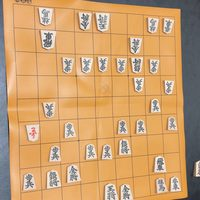
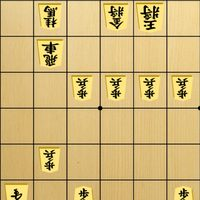
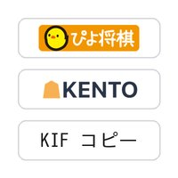

1 盤を撮る
2 盤になる
3 直して渡す
元の写真
認識できませんでした。盤全体が写るように撮り直してみてください
認識結果（駒をタップで修正）
検討アプリ
他アプリ用
局面画像
Shogiban to Kif とは
Shogiban to Kif（将棋盤認識サイト）は、将棋盤の写真から盤面を自動で読み取り、KIF形式・SFEN形式に変換する無料のWebサービスです。感想戦の局面を検討アプリに移したいとき、詰将棋や次の一手の図面を残したいとき、盤を一マスずつ入力し直す必要はありません。写真を1枚撮って、変換ボタンを押すだけです。
認識結果はその場で盤面として表示され、違っている駒はタップで直せます。できあがった局面はKIFやSFENでコピー・保存できるほか、ぴよ将棋やKENTOにそのまま送って解析・検討を続けられます。
よくある質問
利用は無料ですか？登録は必要ですか？
無料で、会員登録も不要です。アプリのインストールもいらず、スマートフォンやPCのブラウザだけで使えます。
どんな形式で書き出せますか？
KIF形式とSFEN形式に対応しています。テキストのコピー・ファイル保存のほか、局面を画像として保存・シェアすることもできます。
作ったkifの解析はできますか？
変換した局面は、ボタンひとつでKENTOやぴよ将棋に渡せます。エンジンによる解析や検討はそちらでそのまま続けられます。
写真1枚から指し手つきの棋譜も作れますか？
写真1枚から作れるのは、その時点の局面です。1局分の指し手つき棋譜が必要な場合は、対局を動画で撮って変換する動画まるごと棋譜化（β版）をお使いください。iPhone・iPad・Androidなら、盤の横に置いて指すだけで棋譜になるアプリ「コマドリ」もあります — App Storeで見る ／ Google Playで見る